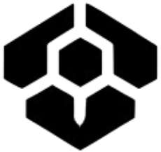

MB-lab


As part of my associate degree in Internet of Things, I completed a 4-month internship at Absolem,
a company specialized in laser technology.
There, I contributed to various projects and learned a great deal about many different areas of the industry.
Writing Python code.
Designing PCBs for SBC (single board computer) and ADC(analog digital converter).
Installing hardware.
Setting up Docker containers for the Python script,
Influx database, and Grafana visualization.
For my first assignment, I demonstrated the possibilities of the Internet of Things (IoT) in the laser lab.
Several laser setups in the lab generate a lot of heat. This heat is regulated using a water cooler.
If the temperature becomes too high, the lasers automatically shut down to prevent overheating.
This slows down the work of colleagues, who then need to wait for the system to cool down.
The Lab-Sens project collects data from the machines, allowing us to identify which setups are overheating the cooling system,
and eventually how factors like temperature, humidity, and vibrations affect test results.
This project shows how IoT can solve practical problems, improve workflow, and increase lab efficiency.
Developing modular software.
Learning (ST) structured language programming.
PLC programming.
For a project for chip manufacturer ASML, we used an industrial computer to control an entire setup,
consisting of various modules such as the laser, several safety switches, and the cooler.
My task was to help develop the software for the laser component of this phase.
This meant I had to learn a new programming language,
and use a standard software template that Absolem applies to machine programming.
I also contributed to the design of a modular structure, making it easier to program and deploy future lasers,
and enabling the machine to be reused across different setups.
By making the laser module easy to replace or swap,
the design of new systems and machines becomes much more flexible and efficient.
Reading and working with electrical schematics.
Connecting electrical equipment.
Laying and connecting cables.
Custom-making certain mounts.
At Absolem, I helped replace a laser that had reached the end of its life cycle.
This laser was used to produce test capsules for leak detection in the pharmaceutical industry,
but broke down before the replacement was ready.
Since the customer expected several capsules each week, development of the new laser had to speed up quickly.
I was asked to assemble the new laser controller,
which was built into a 19-inch rack cabinet that provided power and control for the laser.
After this, I performed a similar task for another experimental setup.
The controllers were assembled using schematics drawn by colleagues,
which allowed us to discuss and apply changes to simplify the assembly process.
Researching components.
Drawing electrical schematics.
Building a prototype on a breadboard.
Designing mounts.
Calibrating the sensor.
At Absolem, we’re working on a system to extend the shelf life of medication by storing it in a controlled atmosphere of nitrogen and CO2.
The setup first creates a vacuum, then fills it with the precise gas mixture.
Since the shelf life heavily depends on this ratio,
it’s crucial to accurately measure the nitrogen/CO2 mix while filling the vacuum.
My job was to select a CO2 sensor that could measure the ratio as early as possible in the process.
The chosen sensor can start measuring from 0.5 bar.
After ordering the sensor and preparing the necessary hardware to process and read the signal,
the project was temporarily paused so I could work on the laser controllers.
We can now perform measurements, amplify the signal with an op-amp, and read it via an AD converter.
What still needs to be done is correctly interpreting the signal using a multiplier factor and calculating this value.
Researching components.
Drawing electrical schematics.
Designing a PCB.
Another assignment I took on was designing a LED driver for leak detection.
The driver was meant to shine high-power LEDs through pipes,
allowing a special camera to detect light on the outside.
For this, I designed a custom PCB to power the SMD LED.
I completed the final design with help from a colleague. Because the high-power LED generates a lot of heat,
I opted for an aluminum PCB for better heat dissipation.
Unfortunately, due to a supplier error, a plastic-finished PCB was delivered instead,
causing significant delays and making it unusable for this project.
Luckily, the schematics weren’t lost.
SMD LEDs are becoming more common in projects, and the designs can easily be adapted for other LEDs and setups.

Driven by my personal interest in IT, I’ve set up a small home lab, fittingly named MB-lab.
Here I experiment in my free time with various coding languages, services, operating systems, etc.
All with the goal of applying them in a professional context later on.
To keep my own services running 24/7, I use a laptop running Proxmox,
an operating system for managing virtual machines and Linux containers.
One container runs a VPN, and a virtual machine hosts this webpage.
There’s also a virtual machine running OpenMediaVault,
which acts as a personal NAS system, making files easily accessible from multiple devices.
I also use it to back up important folders, drives, and systems.
My lab includes two 3D printers.
A Velleman K8200 — though after some personal modifications, only the frame remains original.
As it started hitting its limits, I upgraded to a more advanced CR-5 Pro H.
Once again, only the frame remains unchanged — the rest has been adapted to fit better hotends and extruders.
The motherboards have been optimized to make it easier to configure these upgrades and fine-tune the printer.